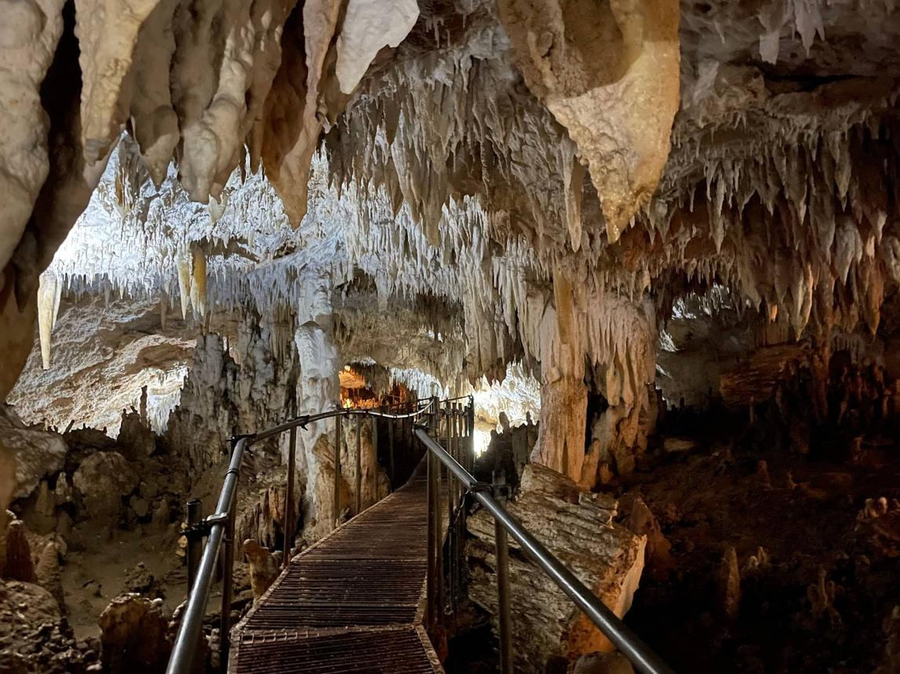
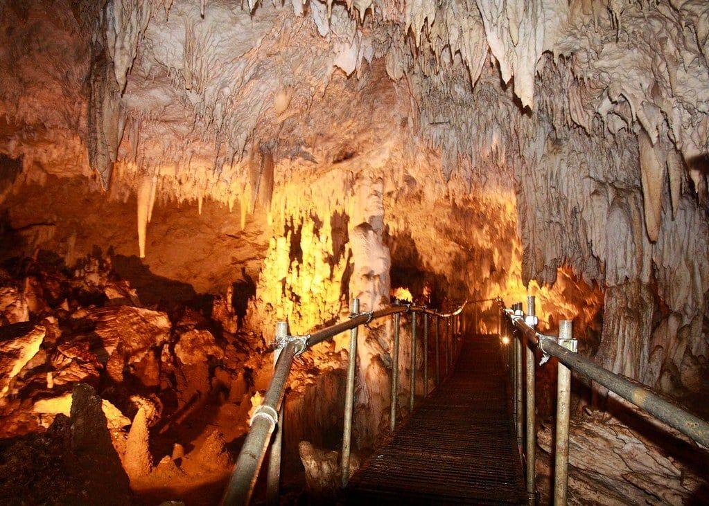

Discover the natural beauty of Mabinay Caves, located in Mabinay, Negros Oriental, Philippines. Explore amazing underground formations and experience an exciting adventure with local guides.
Mabinay is known for its beautiful cave formations and natural attractions. It is a wonderful destination for people who enjoy nature and adventure.
Crystal Cave - Explore beautiful rock formations inside the cave.

Panligawan Cave - Discover a natural cave with a beautiful open-roof chamber.

The Bulwang cave area is approximately a 20-minute tricycle ride from the town terminal. Travel time may vary.
The 2024 Mabinay Citizen's Charter lists tour-related fees of ₱45 per person and ₱400 per group of five, with a total of ₱445 shown in its fee table. Please confirm the current charges with the Tourism Office before visiting.
Please contact the Mabinay Tourism Office or Bulwang Caves Information Center to confirm the current visiting schedule and guide availability.
Visitors are encouraged to follow safety rules and protect the natural cave formations.
Visit the official Municipality of Mabinay website to learn more about the town and its tourism services.
Official Mabinay Website